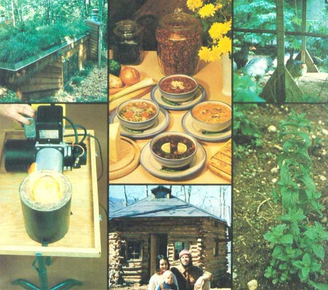

TOP, LEFT: The three-day Earth-Sheltered Homes seminar will give you all the ?hows? and ?whys? relevant to these beautiful and practical dwellings. BOTTOM, LEFT: Does alcohol fuel burn well? Darn right it does! And our Father?s Alcohol seminar will cover the subject from harvest to heating! TOP, CENTER: The thorough background in good eating provided by our Natural Foods/Preparation seminar will help you feed your family healthful meals for below supermarket prices. BOTTOM, CENTER: If the idea of building a home by yourself?using materials found on your own land?appeals to you? the Log Cabin Construction Seminar will provide the necessary know-how. TOP, RIGHT: Critters (be they big or small) can help you put dinner on the table in good times or bad. Look into our Raising Backyard/Homestead Livestock seminar to get your flock, herd, or gaggle off on the right foot! BOTTOM, RIGHT: Herbs (this one is spearmint) can be a source of home remedies, delicious teas, fresh spices, or even the basis of a profitable bootstrap business, and our seminar on the subject will have you windowsill or garden green in no time!